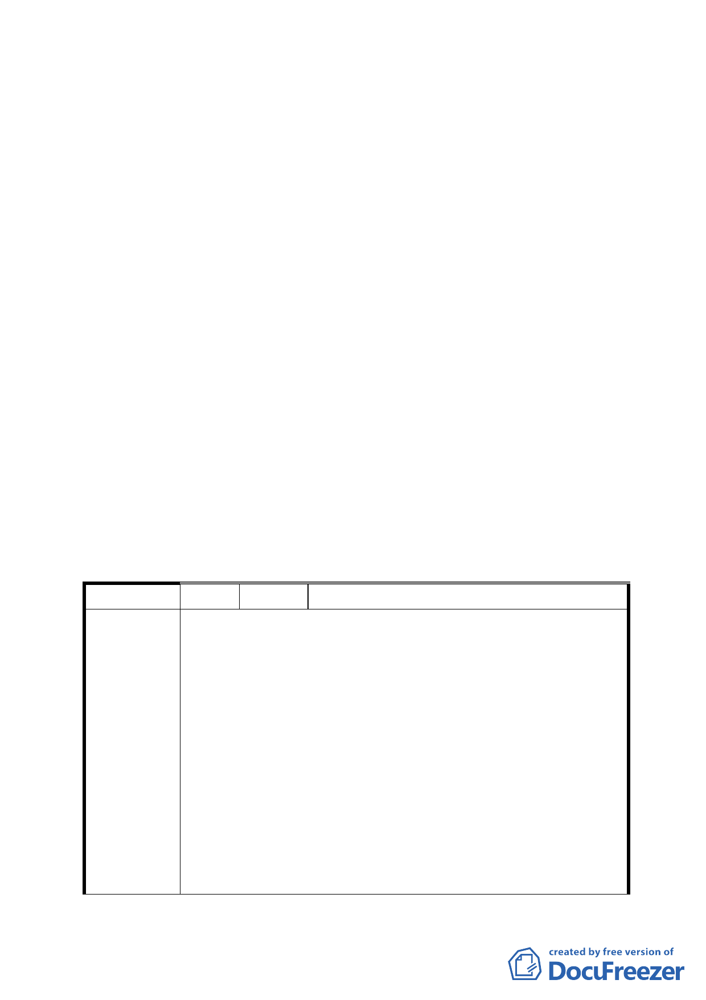

（四）市府都市發展局彙整與修正前述資料於 96.12.06 以府都
規字第 09635905900 號函送書面資料到會，提請續審。
四、 公民或團體所提意見：詳綜理表（共 13 件）。
五、 本件係市府以 96 年 5 月 8 日府都規字第 09631609203 號，
並自 96 年 5 月 9 日起公開展覽 30 天。
六、 法令依據：都市計畫法第 27 條第 1 項第 4 款、都市計畫法
第 22 條。
七、 申請單位：臺北市政府。
決議：
一、 主要計畫：依市府公展案，照案通過。
二、 細部計畫：依市府 96 年 12 月 6 日府都規字第 09635905900
號函所送『第 574 次臺北市都市計畫委員會議決議回應資料-
「擬定臺北市北投區奇岩新社區細部計畫案」修正對照表、
圖』內容通過。
三、 有關公民或團體陳情意見決議情形詳如綜理表。
「變更臺北市北投區奇岩新社區主要計畫案」臺北市都市計畫委
員會公民或團體所提意見綜理表
編 號 １ 陳情人 陳慧君
本人是住在北投區奇岩里的居民，初聞三合街那一帶 16 公頃
地將改為規劃成生態社區，與其他居民討論興奮不已，然在參
加了說明會後，才發現都市發展局的規劃根本只在規劃住宅
區。臺北市已罕有如此大的平地擁有陽明山系的自然、溫泉生
態區。如果可以，北投區的自然…人文真的很適合為 Special
陳 情 理 由 Town。將其與生俱來的資源最大化：生態無污染、溫泉、太陽
能建設的一個小區塊-台灣之耀。臺灣目前面臨國際的壓力，
經濟遲遲無法提昇，運用觀光資源，將此 16 公頃地更新為如
Keukenhof（庫肯霍夫）花園加上溫泉特色，當地的房價將因
此受惠及有利當地地主。臺灣未來的都市規劃將會扮演很重要
角色，如日本 2002 年時期泡沫化的改革。如果我們可以改造
臺灣，我們的觀光產業將提升。誰說臺北市不能創造民宿，德
6